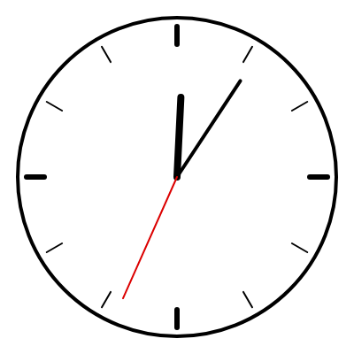

9. 座標変換
この章では、座標系そのものを移動・回転・拡大縮小する 座標変換 を説明します。座標変換を使うと、回転した図形や、同じ形を繰り返し配置した図形を簡単に描けます。
9.1. 座標変換の関数
関数 |
動作 |
|---|---|
|
原点を \((x, y)\) に移動する。 |
|
原点を中心に座標系を回転する。 |
|
原点を中心に座標系を \(s\) 倍に拡大縮小する。 |
これらの関数は、図形を動かすのではなく、図形を描く「方眼紙」のほうを動かすものと考えると分かりやすくなります。座標変換の後に描いた図形は、変換された座標系の上に描かれます。
1translate(200, 200); // 原点をキャンバスの中心に移す
2rect(0, 0, 50, 50); // キャンバス上では (200, 200) の位置に描かれる
座標変換は、呼び出すたびに積み重なります。たとえば translate(100, 0) を 2 回呼ぶと、原点は合計で 200 ピクセル右に移動します。積み重なった変換は、draw() が呼ばれるたびに最初の状態に戻ります。
9.2. 回転
rotate() は常に原点を中心に回転します。そのため、図形をその場で回転させたいときは、先に translate() で原点を図形の中心に移してから rotate() を呼びます。
1translate(200, 200); // 回転の中心に原点を移す
2rotate(frameCount * 0.02);
3rectMode(CENTER);
4rect(0, 0, 100, 100); // 原点を中心に正方形を描く
座標系を角度 \(\theta\) だけ回転すると、変換前の座標系での点 \((x, y)\) は、キャンバス上では次の点 \((x', y')\) に描かれます。
これは数学でおなじみの回転行列です。ただし、キャンバスの y 軸は下向きであるため、\(\theta\) が正のとき、図形は画面上で時計回りに回転します。
角度の単位は、図形の描画 で説明したとおり、既定ではラジアンです。angleMode(DEGREES) を呼ぶと、度数法で指定できます。
9.3. 状態の保存と復元
複数の図形を、それぞれ別の位置や角度で描きたい場合があります。このとき、変換が積み重なったままだと、後の図形が前の図形の変換の影響を受けてしまいます。
push() と pop() を使うと、この問題を避けられます。push() は現在の状態を保存し、pop() は最後に push() で保存した状態に戻します。
1push();
2translate(100, 100);
3rotate(QUARTER_PI);
4fill(255, 0, 0);
5rect(0, 0, 50, 50); // 回転した赤い正方形
6pop();
7
8rect(0, 0, 50, 50); // 変換も色も元に戻っている
保存されるのは座標変換だけではありません。fill()、stroke()、strokeWeight()、colorMode() などのスタイルの設定も保存・復元されます。push() と pop() は必ず対にして使います。
9.4. サンプル
座標変換を使って描いたアナログ時計です。目盛りと針は、どれも「真上に向かう線」を回転させて描いています。
1// translate()、rotate()、push()、pop() で描くアナログ時計
2
3function setup() {
4 createCanvas(400, 400);
5 angleMode(DEGREES); // 角度を度数法で指定する
6}
7
8function draw() {
9 background(255);
10 translate(width / 2, height / 2); // 原点をキャンバスの中心に移す
11
12 // 文字盤の外周
13 noFill();
14 stroke(0);
15 strokeWeight(4);
16 circle(0, 0, 360);
17
18 // 目盛り：30 度ずつ回転しながら 12 本描く
19 for (let i = 0; i < 12; i++) {
20 push();
21 rotate(i * 30);
22 strokeWeight(i % 3 === 0 ? 6 : 2); // 3 時間ごとの目盛りは太くする
23 line(0, -170, 0, -150);
24 pop();
25 }
26
27 // 現在時刻から各針の角度を求める（真上が 0 度、時計回りが正）
28 const s = second();
29 const m = minute() + s / 60;
30 const h = (hour() % 12) + m / 60;
31
32 stroke(0);
33 drawHand(h * 30, 90, 8); // 時針：1 時間で 30 度進む
34 drawHand(m * 6, 130, 4); // 分針：1 分で 6 度進む
35 stroke(220, 0, 0);
36 drawHand(s * 6, 150, 2); // 秒針：1 秒で 6 度進む
37}
38
39// 指定した角度・長さ・太さで針を 1 本描く
40function drawHand(angle, length, weight) {
41 push(); // 現在の座標系とスタイルを保存する
42 rotate(angle);
43 strokeWeight(weight);
44 line(0, 0, 0, -length);
45 pop(); // 保存した状態に戻す
46}
ダウンロード：
index.html、sketch.js


図 9.1 サンプルの実行結果
10 行目で原点をキャンバスの中心に移しているため、以降は時計の中心を \((0, 0)\) として描けます。目盛りを描く 19〜25 行目では、push() と pop() で囲むことで、1 本ごとに回転を元に戻しています。囲まずに rotate(i * 30) を繰り返すと、回転が積み重なり、目盛りの間隔がずれてしまいます。
針の角度は、hour()、minute()、second() で得た現在時刻から求めています。時針が 1 時間で 30 度、分針と秒針が 1 単位で 6 度進むことを利用しています。